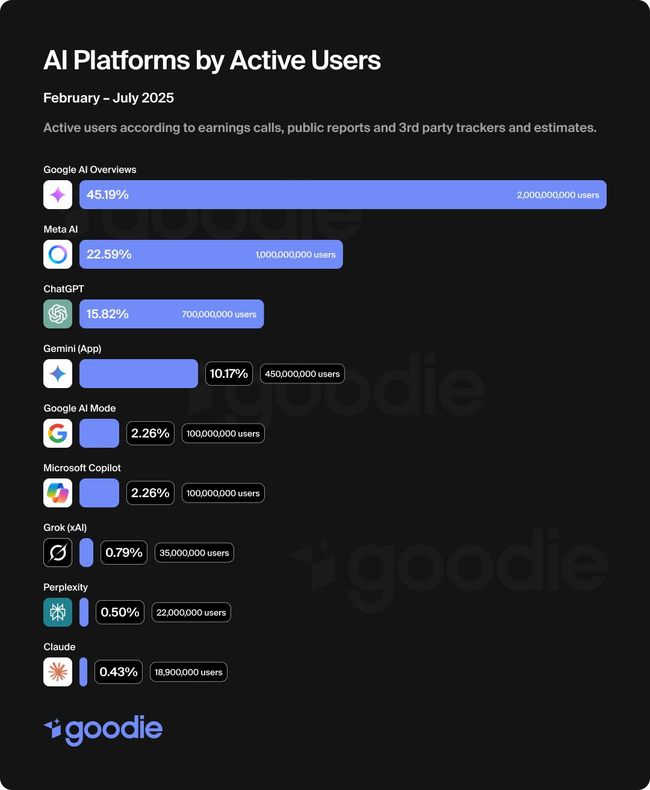
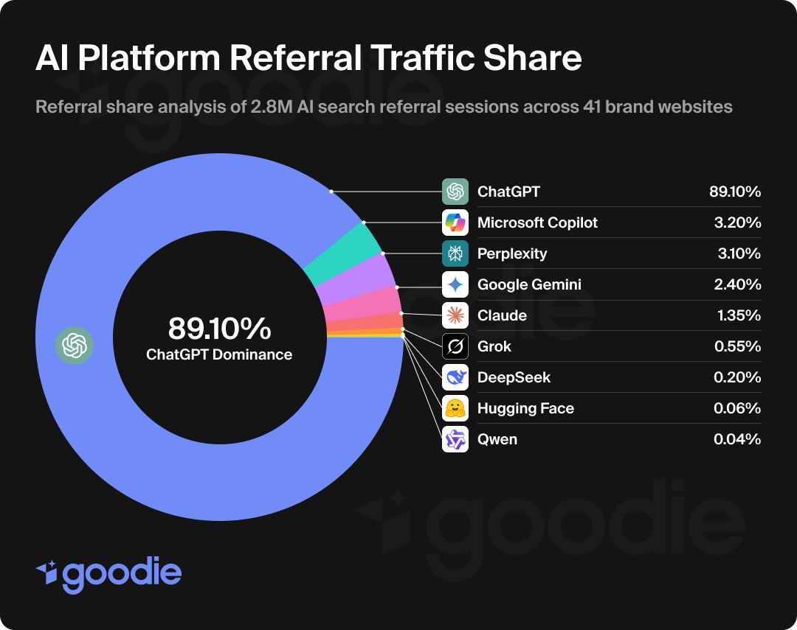
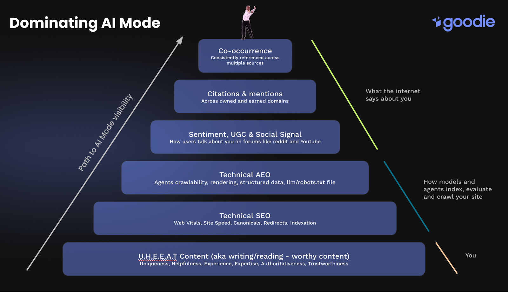

If you still measure success by “rankings and blue links,” you’re playing last year’s game. AI search has moved the shelf. Visibility now lives inside AI answers, agentic shopping flows, and model-generated summaries that often replace the SERP as the decision stage.
This guide distills the core ideas from our recent talks into a crisp playbook for SEO leaders, content teams, growth engineers, and founders. We’ll show you how to design for Google’s AI Mode and AI Overviews, how to earn citations across ChatGPT/Perplexity/Gemini, what to measure, and how to operationalize AEO (Answer Engine Optimization) without throwing away solid SEO.
What changed (fast)
- Google shipped AI Overviews to hundreds of millions and targeted >1B people by year-end 2024; by Q1 2025, Google said AIO reached 1.5B monthly. This is no longer a lab experiment. It’s the default for a growing slice of queries.
- Google rolled out AI Mode—an AI-first search experience that synthesizes answers, shows prominent links, and supports deeper, agentic behavior. Reports indicate Google may make AI Mode the default experience soon.
- AI summaries change clicking behavior. In March 2025, Pew found users clicked a traditional result ~8% of visits when an AI summary appeared vs ~15% when it didn’t. Google disputes the methodology, but nobody disputes that behavior has shifted.
- How often do AI summaries appear? Estimates vary by dataset and month. Studies pegged AI Overviews at ~13% of queries (U.S. desktop, March 2025), with other panels seeing closer to ~18%. Treat frequency as moving and uneven by intent.
- Users are migrating research to AI assistants. Meta says Meta AI hit 1B MAU across apps; OpenAI added shopping inside ChatGPT, and weekly active users topped 400M by February (third-party trackers estimate higher since). These are distribution events, not just features.
Bottom line: discovery is compressing into AI thick clients. Instead of running 5–20 searches and visiting 10 pages, users ask once and get an answer with curated links or a next step.


The mental model: from SEO to AEO
We still love SEO. But the center of gravity has shifted:
- From clicks → visibility inside answers.
- From link building → brand reputation & third-party mentions that LLMs trust.
- From keywords → prompts & topics (and their sub-questions).
- From E-E-A-T → HEAT (Helpfulness, Experience, Expertise, Authoritativeness) plus a unique point of view.
- From algorithms → agents (shopping copilots, task runners, operator-style flows).
You’re optimizing for how models retrieve, verify, synthesize, and cite your brand across the open web—and increasingly, how agents act on that synthesis.
How Google’s AI Mode actually works (and why it matters)
Query fan-out is the headline. Instead of treating your query as a single retrieval, AI Mode expands it into multiple sub-queries, issues many searches at once, pulls from the live web and Google’s graphs, then composes a final answer with citations. Google documents this pattern; reporting from I/O 2025 shows the interface even displaying how many searches it ran on your behalf.
Why you care:
- More ways to qualify: You don’t have to “win the head term.” You can be the best source for one or more sub-topics the system fans out to.
- Volatility is higher. Studies show low URL overlap for repeated AI Mode searches; results remix more often than classic SERPs. That creates new surface area for emerging brands.
- Links still matter—but as evidence. AI Mode shows prominent links, but your job is to become the most-citable evidence for a sub-question the model must answer.
AI Overviews vs AI Mode (tactically):
AI Overviews feel like a snapshot on top of the SERP with a limited set of sources per answer; AI Mode is a session that branches, reasons, and composes longer answers with more opportunities for follow-ups. Both can use query fan-out, but AI Mode is where deeper reasoning + agentic features are accelerating.
Where citations come from (and how to win them)
Independent research shows consistent patterns:
- In AI Mode, Wikipedia, YouTube, Reddit, and Google’s own properties are among the most cited domains; user-generated content (UGC) sources rank high.
- In ChatGPT, Reddit and Wikipedia show up heavily, with authoritative tech and news outlets also prominent.
- Across platforms, there’s low overlap between who gets cited where. Translation: portfolio your presence—don’t bet on a single assistant. (Goodie’s own analyses echo this pattern across verticals.)
Google has also adjusted AIO sourcing to reduce errors (for example, de-emphasizing some UGC after early mishaps), but UGC remains influential in many categories, especially when it’s the best source of lived experience.
Action: Identify the 25–50 most influential sources for your category by assistant (AIO, AI Mode, ChatGPT, Perplexity). Track your presence as the source (owned content cited) and in the sources (third-party lists, reviews, explainers).
The Goodie pyramid for AI visibility
Think of visibility as a stack you build bottom-up:
- Great content with a point of view
Useful, verifiable, and unique. Add real data (studies, benchmarks, teardown analyses). Models reward substance and clarity, especially when it reduces hallucination risk. - Technical SEO still matters
INP/LCP/CLS targets, canonical hygiene, sitemaps, internal linking, JS rendering that doesn’t hide primary content. Don’t ship an SPA that bots—and agents—time out on.
- Technical AEO (machine-friendliness)
- Server-side render critical content; minimize client-side blockers.
- Structured data (JSON-LD) everywhere it fits (Products, HowTo/FAQ, Articles, Organizations, Authors). Give models clean slots to parse facts.
- Robots.txt tuned for LLM crawlers (e.g., GPTBot). Understand that compliance is voluntary; some scrapers ignore rules. Consider emerging RSL (Really Simple Licensing) to set terms, and track training vs. search crawling in your logs/CDN.
- Avoid fragile JS for core facts tables/specs; render them in HTML.
- Server-side render critical content; minimize client-side blockers.
- Sentiment, UGC, and social signals
Reddit threads, YouTube demos, LinkedIn thought leadership, community docs—these seed the model’s evidence and often rank as primary citations. - Citations & mentions across earned/owned
Get included in the lists and explainers AIO and assistants lean on (industry pubs, marketplaces, comparison sites, wiki pages). - Co-occurrence & consistency
Models cross-validate. If your claims and positioning appear consistently across authoritative sources, you’re more likely to be selected as evidence in AI Mode’s fan-out.

Strategy flywheel: be the source, be in the sources, replace the source
1) Be the source (owned):
Create anchor assets that AIs want to cite:
- Original data: category studies, bench tests, conversion benchmarks, teardown research.
- Definitive explainers with semantic chunking: break complex topics into labeled sections the model can lift—What it is, Why it matters, Steps, Trade-offs, Metrics, Glossary.
- Comparison frameworks with crisp tables: criteria, specs, “good for,” failure modes.
- Verifiable claims with references the model can check.
2) Be in the sources (earned):
Reverse-engineer the top-cited domains for your space (by assistant). Prioritize:
- UGC hubs (Reddit, YouTube) with authentic walkthroughs and customer POV.
- Lists & buyer’s guides on niche authority sites.
- Marketplaces/directories (by category).
- Third-party reviews and case studies.
- Founder/expert POV posts on LinkedIn and industry pubs.
3) Replace the source (net-new):
When your brand is absent from “canonical” sources, create the missing public good: a definitive glossary, an annually updated market map, an open dataset. If it’s the best resource, AI will find and cite it.
Google AI Mode vs AI Overviews: tactical differences
- AI Overviews (AIO):
Think “answer snapshot + a handful of sources.” Independent studies show a limited citation set per response (median under a dozen). If your category is AIO-heavy, you need to land in those compressed source lists via high-authority pages and list inclusions. - AI Mode:
Think “multi-hop session with reasoning.” Your aim is to qualify for the sub-queries the system fans out to—equipment specs, pros/cons, price bands, use-cases, pitfalls, benchmarks, etc. Structuring your site to answer those sub-questions with clean evidence raises your inclusion odds. Google’s docs confirm this architecture
Pro tip: In competitive spaces, AI Mode shows more sources and remixes them more often than AIO. That volatility is an opportunity—especially for smaller brands that can’t win classic head terms yet.
Technical AEO checklist (ship this in your next sprint)
- Render for machines first
- SSR or hybrid render for core pages; minimize JS gating content.
- Make specs, tables, and FAQs HTML-native.
- SSR or hybrid render for core pages; minimize JS gating content.
- Mark up everything
- Organization, Author, Product/Offer, HowTo/FAQ, Review, VideoObject where relevant.
- Keep price, dimensions, model names, and other hard facts in predictable markup.
- Organization, Author, Product/Offer, HowTo/FAQ, Review, VideoObject where relevant.
- Performance
- Target LCP < 2.5s, INP < 200ms, CLS < 0.1. Many AI/agent crawlers have tight time budgets. Slow pages silently lose recall.
- Target LCP < 2.5s, INP < 200ms, CLS < 0.1. Many AI/agent crawlers have tight time budgets. Slow pages silently lose recall.
- Crawl governance
- Robots.txt: Set explicit rules for major AI crawlers (e.g., User-agent: GPTBot). Understand it’s advisory; monitor abuse.
- Consider RSL to declare licensing terms in robots and route compliant crawlers. Track enforcement with your CDN/WAF.
- Robots.txt: Set explicit rules for major AI crawlers (e.g., User-agent: GPTBot). Understand it’s advisory; monitor abuse.
- Evidence atoms
- Put claims next to sources. Inline citations, footnotes, or references with dates. Make it easy for models to verify.
- Put claims next to sources. Inline citations, footnotes, or references with dates. Make it easy for models to verify.
- Answer-ready formatting
- Short paragraphs, meaningful H2/H3s, scannable bullet points, TL;DR blocks, and Q&A sections that mirror how users actually prompt.
- Short paragraphs, meaningful H2/H3s, scannable bullet points, TL;DR blocks, and Q&A sections that mirror how users actually prompt.
Content design: semantic chunking that models reward
Most “AI-unfriendly” content fails because it hides the answer. Fix it with semantic chunking:
- Lead with a TL;DR and a crisp definition.
- Decompose the topic into stable sub-questions the model is likely to fan-out: requirements, evaluation criteria, setup, trade-offs, metrics, alternatives, examples, pitfalls.
- Add structured facts (spec tables, timelines, formulas) and examples with step-by-step sequences.
- End with next actions (“How to choose”, “Decision checklist”, “Talk to sales with X ready”).
Chunked content reduces the model’s work and increases the chance your page is chosen as evidence for one or more sub-queries.
Measurement: what to track now (and what’s still fuzzy)
1) Visibility inside answers
- Citation share by assistant (AIO, AI Mode, ChatGPT, Perplexity).
- Unique domains citing you (owned vs earned).
- Query-class coverage (informational, navigational, transactional).
- Co-occurrence heatmap: which entities, categories, and phrases co-appear with your brand across citations.
2) Traffic & quality
- LLM referral sessions by platform (ChatGPT, Copilot, Perplexity, Gemini).
- Downstream conversion rate and lead quality. Evidence is mixed:
- Some studies (including Semrush/MarTech coverage) report ~4.4× higher conversion for AI search visitors vs traditional organic.
- Others show no statistically significant lift on average across sites.
- Niche case studies show strong uplifts for certain categories.
Read the footnotes, segment by intent, and measure your funnel.
- Some studies (including Semrush/MarTech coverage) report ~4.4× higher conversion for AI search visitors vs traditional organic.
3) Macro context (for your board):
- How often AI summaries appear in your category (use independent panels as proxies).
- Zero-click trends and click displacement when summaries show. (Pew found 8% vs 15% click-through to traditional results when an AI summary is present; Search Engine Land observed zero-click creeping up in both U.S. and EU/UK YoY.)
4) Crawl telemetry
- Track AI bot families in your logs/CDN (training vs search vs user actions). Cloudflare’s data shows training-related crawling growing year-over-year, widening the crawl-to-click gap. Plan licensing and bandwidth accordingly.
Goodie note: In our aggregate dataset (2.8M+ AI search referral sessions across 41 brands), ChatGPT accounted for the lion’s share of identifiable LLM referrals, and LLM-sourced leads converted materially higher than baseline organic for several B2B and commerce segments. Your mileage will vary—so instrument, don’t assume.
A 90-day AEO plan (you can start Monday)
Week 0–2: Baseline & map the terrain
- List your priority topics (revenue-relevant) and write 5–10 prompts per topic that match real buyer questions.
- For each topic, collect citations shown in AI Mode, AIO, ChatGPT, Perplexity. Bucket them into owned (you) and earned (others).
- Build your Top 50 Sources list per assistant (publishers, directories, UGC, marketplaces).
Week 2–4: Fix technical AEO
- SSR critical pages, expose facts in HTML, and add JSON-LD across key templates.
- Tune robots.txt for AI crawlers, set up licensing posture (e.g., RSL), and log bot families via CDN/WAF.
- Hit Core Web Vitals targets; make FAQ/HowTo/Review markup consistent.
Week 4–8: Be the source
- Ship 3 anchor assets with original data (benchmarks, state-of-the-market, teardown).
- Ship a cluster (8–12 pieces) per topic, chunked into sub-questions AI fan-out is likely to ask.
Week 6–10: Be in the sources
- Pitch list inclusions and expert quotes to your Top 50, prioritizing domains that AIs cite the most in your vertical.
- Seed UGC: product walkthroughs on YouTube, honest threads on Reddit, side-by-side comparisons. (No astroturf. Models sniff that out.)
Week 8–12: Replace the missing source
- If your category lacks a canonical resource, publish it (glossary, public dataset, industry map).
- Re-measure citations and LLM referrals; compare lead quality and time-to-close vs classic search.
Designing for agentic shopping
It’s not just answers; agents act. Two shifts to plan for:
- AI shopping inside assistants. OpenAI rolled out product discovery inside ChatGPT with images, reviews, and buy links. If your product metadata (price, variants, specs, availability) isn’t clean and consistent across your site and major retailers, you’ll miss inclusion.
- Retailer copilots (Amazon Rufus/Alexa for Shopping, Sparky) now shape product discovery. Your PDPs, comparative content, and Q&A need to answer the why and the which as much as the what, with structured facts models can lift.
Checklist for retail/catalog teams
- Normalize product taxonomy and attributes; publish structured feeds and Product schema.
- Maintain price and spec parity across DTC and marketplaces to avoid contradictions.
- Add usage context (“best for…”, “works with…”)—these phrases often map to the sub-queries agents ask during fan-out.
What “good” looks like, simply
- Your brand shows up as a cited source for the prompts that matter, across multiple assistants.
- Your owned pages read like modular answer kits—chunked, verified, with structured facts.
- Your earned footprint (lists, explainers, UGC) says the same thing about who you are and what you’re best for.
- Your AI bot telemetry and attribution stack tell you which assistants drive qualified demand, not just sessions.
- Your team can ship: new data assets quarterly, structured content weekly, and source outreach continuously.
The shelf moved. That’s not bad news, it’s a bigger shelf. Brands that master AEO now will compound trust across assistants, citations, and agents while everyone else argues about CTR.
If you want the end-to-end loop—monitor → analyze → optimize → attribute—that’s the system we’re building at Goodie. But whether you use our platform or a spreadsheet, the playbook above is how you win the new answer web.